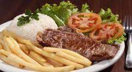
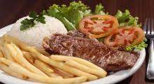

salgados
Em uma deliciosa viagem gastronômica, acompanhada de belas fotos,apremiada escritora britânica Diana Henry revela as tradições culinárias de diversos países da Europa, da América, da Ásia e do Oriente Médio, paraensinar como preparar iguarias tentadoras Apresenta receitas tanto básicas como inovadoras de geleias, doces de frutas, molhos, pastas, mostardas etc, além de mostrar como preparar conservas no azeite, confits, carnes e peixes curados e defumados, bebidas e muito mais.
 
